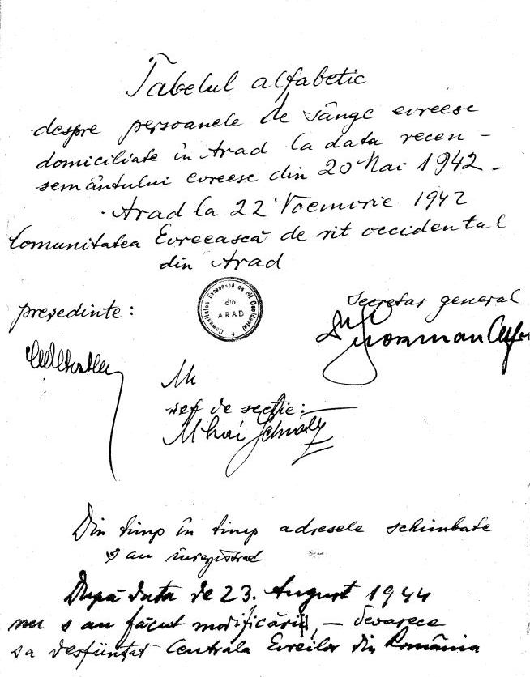

|
· Background · Database · Acknowledgements · Searching the Database |
Arad, a city in Transylvania, western Romania, was in Hungary until 1918. Jews were first recorded as residents in 1717. Arad became known for extreme Reform Judaism. The emancipation of the Jews in 1867 attracted many Jews to take an active part in Hungarian economic, political, and cultural life. In 1868, the community joined the Neolog association, and they considered themselves Hungarians of "Mosaic religion." In 1903 an Orthodox community was established, and a school and yeshiva were established. The Zionist movement found support in Arad, and the "Jewish Party," after Transylvania became a part of Romania in 1919, also obtained many votes in the elections for the Romanian parliament. Arad Jews, like Romanian Jews, suffered from increasing anti-Semitism after World War I. In the years of the Antonescu government, the two Jewish communities, the Orthodox and the Neolog, cooporated in the interests of their membership.
The Jewish population was 812 in 1839; 4,795 in 1891; 6,430 in 1920; 7,000 in 1928, about 10% of the total population; 7,835 in 1941; and 9,402 in 1942 (this last increase due to the enforced concentration in Arad of Jews from the villages and country towns of the area by the Romanian Fascist authorities in 1941-42). In August 1941 all Jewish males, 18-55 years old, were drafted into labor battalions. The Jews from the Arad district together with those of the district of Timişoara were slated to be deported to the Belzec extermination camp in 1942, at the very beginning of a massive joint Romanian-German operation which targeted all the Jews from Regat and southern Transylvania. On October 11, 1942, the order to deport the Jews of Arad was rescinded. In August-September 1944 most of the Jews in Arad fled to Timişoara. Together with the majority of the Jews of Regat and southern Transylvania, the Jews of Arad survived the war.
The Jewish community of Arad numbered 13,200 in 1947. Due primarily to emigration to Israel, there was a decrease in Jewish residents to 4,000 in 1969. In 2000, only a few hundred Jews remained in Arad.
The Arad 1942 census, was compiled on May 20, 1942, with 9,453 names and updated between that time and August 23, 1942. In many instances the typed address is crossed out and a new handwritten address is inserted. Where legible, we have included the handwritten address as well as the typed one. The changes were made by the Jewish Central Federation of Arad (Centrala Evreilor).
Radu Ioanid notes that it is important to recognize that this is "a racial census." The Arad census is unique for two reasons: 1) there are no other Jewish censuses from other towns, and 2) most of the Jewish population in Arad fortunately survived, unlike the Jewish population of so many other Romanian towns.
Accompanying the census list was a handwritten letter of transmittal, translated by Radu Ioanid and Oleg Sirbu as follows:
"Alphabetical table about the persons of Jewish blood living in Arad on the date of the Jewish census from May 20, 1942.
[signed] Arad, 22 November 1942, the Jewish community of Occidental [Neolog] from Arad. President, General Secretary, and Chief of Section.
[note: occasionally the address changed and were registered as such]. After 23 August 1944, no changes were made because Centrala Eveilor (Romanian Judenrat) was disbanded."
|
 |
This database includes 9,698 individuals from the original and update census. Four pages appear to missing from the original source material:
| Section of Census | Page(s) |
|---|---|
| Surname K | 22 |
| Surname M | 8 |
| Surname W | 4 |
| Addendum III | 3 or 4 |
The fields of the database are as follows:
Occupation translations: To assist the researcher with the translation of Romanian occupations appearing in this census, please refer to JewishGen's Info File at: http://www.jewishgen.org/InfoFiles/RomanianOccs.htm.
The information contained in this database was indexed from an uncatalogued list in the files of the United States Holocaust Memorial Museum. Kurt Friedlaender, Ellen Krechmer, Uri Ladell, Diana Seldes, Leah Taylor and Miriam Weinreb performed the data entry portion for this project and Huddy Haller, USHMM volunteer, proofread the list.
In addition, thanks to JewishGen Inc. for providing the website and database expertise to make this database accessible. Special thanks to Warren Blatt and Michael Tobias for their continued contributions to Jewish genealogy. Particular thanks to the Research Division headed by Joyce Field and to Nolan Altman, coordinator of Holocaust files.
Nolan Altman
August, 2008
This database is searchable via JewishGen's Holocaust Database.
Copyright ©2008, JewishGen, Inc.
Last Update: 21 Sept 2008 by MFK